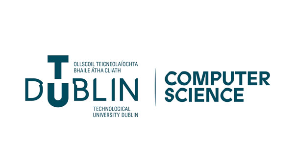
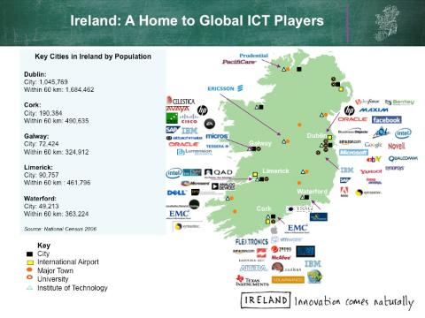
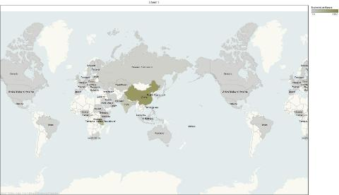

About Our School

Vision
Our vision for international activities is that the School will be a global hub for
Connecting the highest calibre international computer science graduates
with the global ICT industry
To achieve this
- we will have a substantive collaboration with our closest counterpart in higher education in the top ten countries with the largest ICT sectors
- we will fully internationalise our teaching and research programmes to ensure we attract national and international students of the highest calibre and provide them with a quality international education and placement experience
- we will engage with multinational and indigenous companies operating in an international context to provide pathways to employment for our graduates
Why Ireland and Dublin?

http://www.idaireland.com/business-in-ireland/information-communication/
IRELAND
- Native English-speaking population
- The EU stated that Ireland produces “The most employable graduates in Europe” (Eurofin report)
- Ireland is in the Top 5 of software exporters in the world
- Highest concentration of ICT activity in OECD countries
- The Global Peace Index rates 158 nations worldwide on measures such as conflict, safety and security in society and militarisation. In 2021, it ranked Ireland the eight most peaceful place on Earth.
DUBLIN
- We are based in Dublin, Ireland’s capital city, which has earned a reputation as the ‘Silicon Valley of Europe’. Ireland has the second highest concentration of ICT multinationals in the world, outside Silicon Valley, and has a thriving indigenous IT sector.
- Dublin is the European Headqaurters for 8 of the top 10 ICT multinationals and the School of Computer Science has established links for internships, graduate placement and other acitivities with nearly all of these companies.
- Dublin is ranked at the best city in the world for human capital, first for the availability of skilled people and first for people’s flexibiity and adaptability
- Dublin is in the Top 10 English-speaking cities in the world for standard of living (Mercer)
.
Why TU Dublin?
- TU Dublin School of Computer Science is ranked in the top 3% of universities worldwide (Times Higher). It is the largest Higher Education Institution in the Republic of Ireland with approx. 22,000 students (9% of total Irish Higher Education sector). It has approximately 500 research students and 4,500 graduates per annum (approx 100 research PhD & Masters graduates)
- Our programmes are internationally accredited on the European & Irish National Qualifications Frameworks
- TU Dublin is a member of the International University Association and the European University Association
- All our programmes have a strong industry and professional orientation and DIT prides itself on ‘being one step closer to the real-world’.
Why Computer Science at TU Dublin(City Campus)?
The School of Computer Science in TU Dublin(City Campus) has an established and extensive track record in many aspects of international activity including the delivery of Bachelor’s degree programmes on three continents (Europe, Asia and Africa) and partnerships with international HEIs for joint programmes, student exchanges, 2+2 advanced entry arrangements, staff teaching exchanges, Erasmus exchanges and other activities.
- We are the largest School of Computer Science in Ireland (HEA 2010/11 Student statistics – ISCED Code : Computer Science)
- We offer professionally-oriented undergraduate, postgraduate and PhD programmes which are characterised by strong industry engagement through internships, industry projects and industry accreditation. An international accreditation panel (the British Computer Society) commended our industry engagement as ‘exemplary’.
- On average one quarter of all teaching hours in the School are taught by international staff including lecturers from non-EU countries (China, USA, Tanzania and Kenya) and EU countries (Italy, Sweden, UK, Bulgaria and Bosnia-Hercegovina).
- We provide opportunities for internships with the world’s leading ICT companies (8 of the top 10 have bases in Ireland).
- We have ten years of experience running programmes on three continents (Europe, Asia and Africa) and we have welcomed over 1000 international students from 53 countries to our programmes over the last five years.
Our Students

Origins of international students for the last 5 years
International Programmes
- Since 2003, we have run our BSc in Computer Science in Harbin Institute of Technology in Harbin, China
- Since 2007, we have run our BSc in Computer Science with the Institute of Financial Management in Dar Es Salaam, Tanzania
- Since 2011, we have a Joint International Masters in Computing with Harbin Institute of Technology in Harbin, China
- Since 2007, we have run a PhD programme with staff from the Institute of Financial Management in Dar Es Salaam, Tanzania
- Since 2012/13 we have run a Joint BSc in Computer Science (International) with the University of Applied Sciences, Darmstadt Germany and the University of Applied Sciences, Oulu Finland.
- We also run the KEDDIT degree a joint BSc in Computer Science (International) with Kyungpook National University, Daegu alongside our EDDIT partners in Darmstadt and Oulu
- ’Global Classroom’ an online module - Key to the module is the semester-long Global Classroom module, delivered online across time-zones, countries and cultures is a unique and innovative team project module.
The School has Erasmus partnerships in place with the following European Universities:
-
Austria
- University of Zilina
- Fachhochschule Kufstein
-
Belgium
- Haute Ecole Leonard de Vinci, Brussels
-
Bulgaria
- Technical University, Varna
-
Czech Republic
- University of Technology, Brno
-
Finland
- University of Oulu
-
France
- IUT, Toulouse
- Telecom Sud-Paris
-
Germany
- University of Applied Sciences, Darmstadt
-
Norway
- University of Adger
-
Spain
- Universitat Politècnica de Catalunya, Barcelona
The School has Articulation Agreements in place with the following international higher education Institutions.
- Kyungpook National University, Korea (KEDDIT Joint BSc in Computer Science)
- Hefei University, Anhui Province, China (entry to year 3 of BSc in Computer Science following completion of 2 years in Hefei)
- UESTC, Chengdhu, China (entry to year 3 of BSc in Computer Science following completion of 2 years in UESTC)
- Harbin Institute of Technology, Harbin, China (entry to year 3 of BSc in Computer Science following completion of 2 years in Harbin IT)
.
Our Experience
International industry experience
Staff in the School have worked abroad for six months or more in the following countries:-
- Bahrain with ESB International
- Belgium with Avonmore and leading insurance companies
- Bulgaria with the Bulgarian Academy of Science
- Canada with Ontario Hydro and International Nickel Company
- China with Chinese Universities
- Germany
- In Saarbrucken with the German Centre for Artificial Intelligence
- In Bremen with the University of Bremen and the SFB Spatial
- Cognition Research Center
- In Hamburg with Hamburg University
- Hong Kong with local universities
- Italy with IBM
- Kenya
- The Netherlands in Eindhoven with Phillips
- United Kingdom with Camelot, Oracle, Harland and Wolf, BT and Concert Communications
- USA
- In Chicago with Accenture
- In San Francisco with Anderson Consulting
- In Silicon Valley with Sun Microsystems
- In New York with JP Morgan
- Uzbekistan with ESBI
- Tanzania with local universities
- Zimbabwe with National Lottery
Staff from the School have worked on international projects with Irish and Multi-national companies in the following countries:-
- Canada with Critical Path Ireland
- EMEA projects with Citrix Software Systems
- France with Airbus
- India
- Kenya with CR2
- Serbia with CR2
- Singapore with AON PLc
- Switzerland with Novartis
- United Kingdom with Cadburys, Tellabs and Redler Ltd.
- United Arab Emirates (Dubai) with CR2
- USA (Sun Microsystems, Fedex, Agilent Technologies)
International Higher Education Projects (Teaching and Research)
Staff have participated in teaching exchanges with the following countries
- Canada in Memorial University Newfoundland
- China in Harbin Institute of Technology
- Czech Republic in Liberec University
- France
- IUT Toulouse
- IUT La Rochelle
- IUT Lannion
- Telecom Sud-Paris France
- Germany in the University of Applied Sciences Darmstadt
- Korea
- Kyungpook National university
- Chonnam National University
- Soongsil University
- Hanyang University
- Tanzania as part of BSc in Computer Science programme with IFM
- United Kingdom as part of GETM3 project with Northumbria University
Staff from the School have participated in the following international teaching and research projects:-
European Projects
- HUBLINKED - We are the Lead Partner in the HUBLinked Knowledge Alliance. HUBLinked’s aim is to strengthen Europe’s software innovation capacity by learning from regions of proven ICT strength and sharing that knowledge will all regions. HubLinked will (i) improve the effectiveness University-Industry (U-I) linkages between computer science faculty and different types of companies (ii) develop global software innovator graduates that can work in any sector and (iii) upskill academic and industry staff to engage in U-I linkages for software innovation.
- GETM3 (Global Entrepreneurial Talent Management 3 ) is an international, interdisciplinary research and innovation project funded by the EU's Horizon 2020 and led by Northumbria University in the United Kingdom. The overarching aim of the research project is to improve employability and future global talent management to support economic development.
- QUALITY BLENDED LEARNING is a Marie Sklodowska-Curie Action which aims to explore the area of Blended Learning within higher education. The project comprises of partners in Slovenia , Italy, Spain Germany and DIT in Dublin
- EU EMERSION (Lead partner - development of an education model to meet the needs of the developing software industry in China, drawing on our local knowledge of the Irish education system’s successes in supporting the growth of the Irish software industry, and our Chinese partner’s understanding of specific needs in their country) with Harbin Institute of Technology, China and University of Wolverhampton, UK. The project is fully documented in the following book: Deirdre Lawless; Bing Wu; Dave Carroll, Damian Gordon; Matt Hussey; Ciarán O'Leary; Brendan O'Shea; Xu Xiaofei (Eds.) (2007), An Industry-Oriented Model for Software Education in China: Adapting and Irish Model to Chinese Conditions. Blackhall Publishing.
- SCOPE project (European Standards Collaboration) with partners in Germany, Finland, Denmark, Spain, United Kingdom, France and Italy
- EU FP6 (Germany)
- E4 Project / ISIS network with partners in Elastan (Poland), Eminus (Netherlands) and START (Germany)
- EU Icaras Project (Temporal formal specifications and software engineering techniques) with partners in Belgium, Spain, Germany.
- EU PLOETUS coordination group (PLOETUS/EQF making data on education from member states available through a central EU portal)
- EU/ESPRIT with partners from the United Kingdom, Netherlands, Italy and Greece.
- CERFACS, Toulouse
- DBR-MAT Project. Bulgarian Academy of Science, Linguistic Modelling Laboratory (Knowledge based machine-aided translation with partners in Germany, Bulgaria and Romania)
- CGLex Project. Bulgarian Academy of Science, Linguistic Modelling Laboratory. Creating a Natural Language-based to for Conceptual Graph acquisition.
Beyond Europe
- ‘Inclusive Learning Through Technology’ project with the De Bono Institute and Rochester University, New York
- BRANDON – Ireland-Newfoundland Partnership. Development of a masters degree in Educational Technologies with partners in Canada, Germany and Ireland.
- Chinese Ministry of Education : provided training and development workshops on Learning and Teaching methods for Industry-Oriented Education to educators from Chinese higher education.
- GeSCI: The Global e-Schools and Communities Initiative is an organisation which advises governments in developing countries on the use of ICT in education. The School of Computer Science is working closely with GeSCI on an initial survey of ICT usage in secondary schools in Kenya and has been involved as peer reviewers and advisors on the development of initial survey and other instruments.
- Camara: Camara Education is an organisation based in the Digital Hub, close to the Kevin St campus of the DIT, which recycles computing hardware by offering a route for this hardware to be reused in developing countries for education and training. The School of Computer Science is currently establishing parameters for a partnership to recognise that ways in which our staff and students have been working with Camara as volunteers in the past, and identifying ways in which we can support each other’s work.
- Wells for Zoë: Wells for Zoë is an Irish water charity which works in Mzuzu in northern Malawi, where their primary role is the provision of clean drinking water to people in local villages, who otherwise would have to travel long distances for water. Students from the School of Computer Science work with this charity, and will work with other organisations in Mzuzu, as part of a Service-Learning project. This project has also led to work taking place in the School of Computer Science on the development of curricula for ICT training courses for secondary school teachers in Malawi, in partnership with Mzuzu University.
Publishing with international authors
Many staff in the School have published with international authors from Bulgaria, China, Denmark, France, Germany, Italy, The Netherlands, , Romania, Russia, Switzerland, the USA and the United Kingdom. Researchers from the School have been external examiners in Sweden (KTH), Australia (University of Macquarie) and Scotland (University of Aberdeen). They have been involved in the organisation of international conferences in Germany (Potsdam), USA (Oregon, Boston) including ICCBR, WWW2012, VISPLE, Japan, France and peer review/editor for international journals (Springer/Taylor, Francis/Wiley/Sage, TEAM, Progress in Artificial Intelligence journal,etc.). An annual conference, entitled China - Europe International Symposium on Software Industry Oriented Education which runs in China and Europe in alternate years and was hosted by the DIT in February 2007.
Languages spoken in the School
- English
- Irish
- Chinese
- French
- Spanish
- German
- Greek
- Bulgarian
- Russian
- Italian
- Swahili